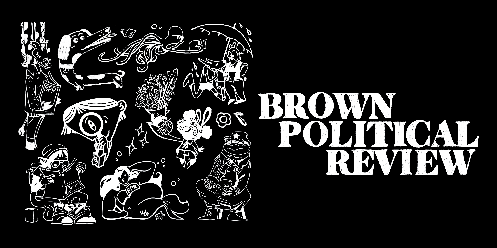
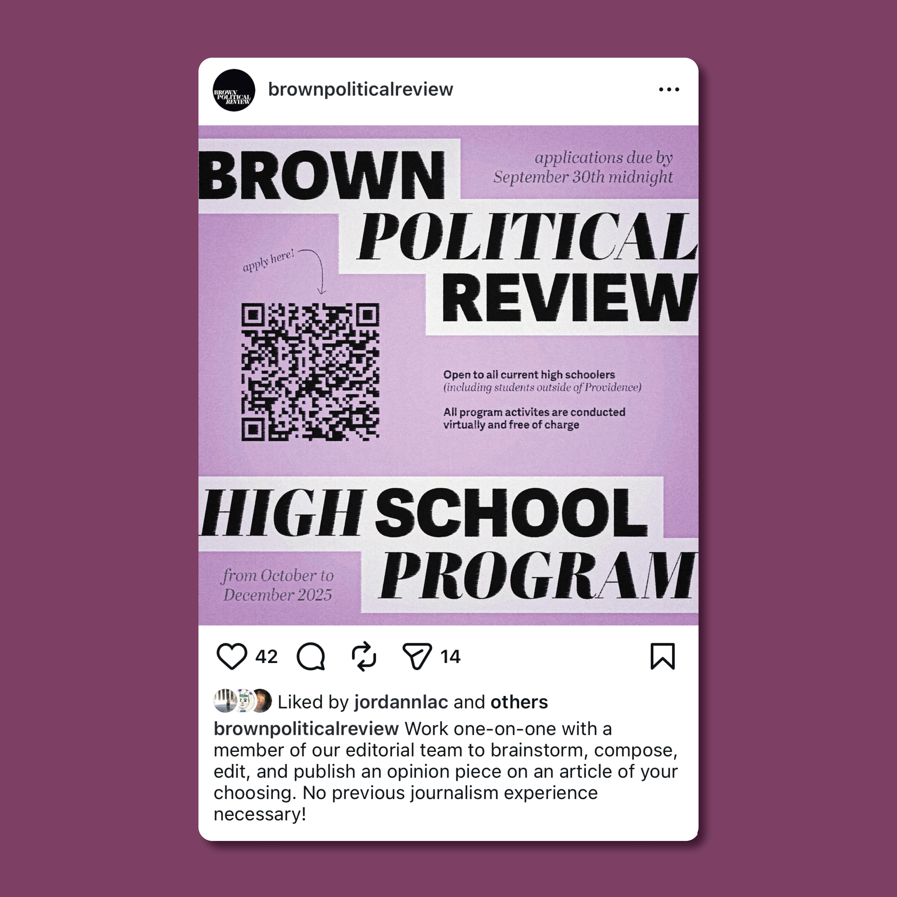

BROWN POLITICAL REVIEW
managing the creative logistics in a student magazine
creative direction
client Brown Political Review
collaborator Thomas Dimayuga
The Brown Political Review (BPR), is Brown University’s fully student-run, nonpartisan magazine for political journalism. Published twice a semester in the fall and spring, BPR produces a printed magazine featuring student-written and student-illustrated articles around recent events and the special feature topic. I oversaw the creative direction for the magazine, including the pagination, cover direction, and illustration concepts.


In 2024, I led a team of nine illustrators to create a collaborative design for a tote bag and apparel merchandise, working to design a process where as many students as possible could participate in creating the merchandise. Additionally, the layout was inspired by the proportions of the BPR magazine covers.



In addition to directing and managing the creative team that designs and illustrates the BPR magazines, my role as Creative Director included creating graphics and posters for the student publication club.
